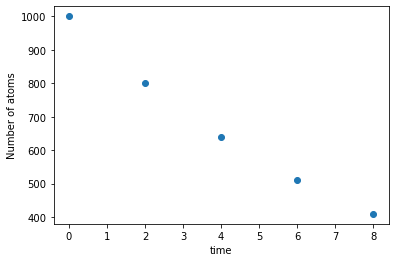
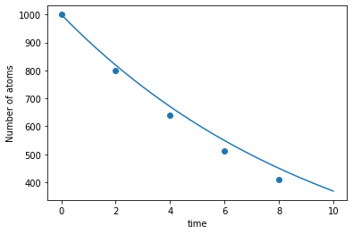

import numpy as np
import matplotlib.pyplot as pltEuler’s method
There are a variety of ways to solve an ODE
In the previous lesson we considered nuclear decay:
\[\begin{equation} \frac{\mathrm{d} N}{\mathrm{d} t} = -\lambda N \end{equation}\]
This is one of the simplest examples of am ODE - a first-order, linear, separable differential equation with one dependent variable. We saw that we could model the number of atoms \(N\) by finding an analytic solution through integration:
\[\begin{equation} N = N_0 e^{-\lambda t} \end{equation}\]
However there is more than one way to crack an egg (or solve a differential equation). We could have, instead, used an approximate, numerical method. One such method - Euler’s method - is this subject of this lesson.
A function can be approximated using a Taylor expansion
The Taylor series is a polynomial expansion of a function about a point. For example, the image below shows \(\mathrm{sin}(x)\) and its Taylor approximation by polynomials of degree 1, 3, 5, 7, 9, 11, and 13 at \(x = 0\).

The Taylor series of \(f(x)\) evaluated at point \(a\) can be expressed as:
\[\begin{equation} f(x) = f(a) + \frac{\mathrm{d} f}{\mathrm{d} x}(x-a) + \frac{1}{2!} \frac{\mathrm{d} ^2f}{\mathrm{d} x^2}(x-a)^2 + \frac{1}{3!} \frac{\mathrm{d} ^3f}{\mathrm{d} x^3}(x-a)^3 \end{equation}\]
Returning to our example of nuclear decay, we can use a Taylor expansion to write the value of \(N\) a short interval \(h\) later:
\[\begin{equation} N(t+h) = N(t) + h\frac{\mathrm{d}N}{\mathrm{d}t} + \frac{1}{2}h^2\frac{\mathrm{d}^2N}{\mathrm{d}t^2} + \ldots \end{equation}\]
\[\begin{equation} N(t+h) = N(t) + hf(N,t) + \mathcal{O}(h^2) \end{equation}\]
Note
If you want to know more about Taylor expansion, there is an excellent video explanation from user 3blue1brown on Youtube, a link is provided under external resources.
If the step size \(h\) is small then higher order terms can be neglected
If \(h\) is small and \(h^2\) is very small we can neglect the terms in \(h^2\) and higher and we get:
\[\begin{equation} N(t+h) = N(t) + hf(N,t). \end{equation}\]
Euler’s method can be used to approximate the solution of differential equations
We can keep applying the equation above so that we calculate \(N(t)\) at a succession of equally spaced points for as long as we want. If \(h\) is small enough we can get a good approximation to the solution of the equation. This method for solving differential equations is called Euler’s method, after Leonhard Euler, its inventor.

Note
Although we are neglecting terms \(h^2\) and higher, Euler’s method typically has an error linear in \(h\) as the error accumulates over repeated steps. This means that if we want to double the accuracy of our calculation we need to double the number of steps, and double the calcuation time.
Note
So far we have looked at an example where the input (or independent variable) is time. This isn’t always the case - but it is the most common case in physics, as we are often interested in how things evolve with time.
Euler’s method can be applied using the Python skills we have developed
Let’s use Euler’s method to solve the differential equation for nuclear decay. We will model the decay process over a period of 10 seconds, with the decay constant \(\lambda=0.1\) and the initial condition \(N_0 = 1000\).
\[\begin{equation} \frac{\mathrm{d}N}{\mathrm{d} t} = -0.1 N \end{equation}\]
First, let’s import the standard scientific libraries we will be using - Numpy and Matplotlib:
Let’s definte the function \(f(N,t)\) which describes the rate of decay. In this case, the function depends only on the number of atoms present.
# define the function for nuclear decay
def f(Num_atoms):
return -0.1*Num_atomsNext we’ll list the simulation parameters and initial conditions: start time, end time, number of starting atoms (which is an initial condition), number of time steps and step size (which is calculated using the number of time steps).
a = 0 # start time
b = 10 # end time
Num_atoms = 1000 # initial condition
num_steps = 5 # number of time steps
h = (b-a) / num_steps # time step sizeWe use the Numpy arange function to generate a list of evenly spaced times at which to evaluate the number of atoms. We also create an empty list to hold the values for \(N\) that we are yet to calculate.
# use the Numpy arange function to generate a list of evenly spaced times at which to evaluate the number of atoms N.
time_list = np.arange(a,b,h)
# create an empty list to hold the calculated N values
Num_atoms_list = []Finally, we apply Euler’s method using a For loop. Note that the order of operations in the loop body is important.
# apply Euler's method. Note that the order of operations in the loop body is important.
for time in time_list:
Num_atoms_list.append(Num_atoms)
Num_atoms += h*f(Num_atoms)We can easily visualise our results, and compare against the analytical solution, using the matplotlib plotting library
plt.scatter(time_list, Num_atoms_list)
plt.xlabel("time")
plt.ylabel("Number of atoms")
plt.show()
Using the analytic solution from the previous lesson, we can define a function for calculating the number of atoms \(N\) as a function of time (this is the exact solution).
def analytic_solution(time):
return 1000*np.exp(-0.1*time)We can use this to calculate the exact value for \(N\) over the full time range. Note that we use a large number of points in time (in this case 1000) to give a nice smooth curve:
num_steps = 1000
h = (b-a) / num_steps
time_analytic_list = np.arange(a,b,h)
Num_atoms_analytic_list = []
for time in time_analytic_list:
Num_atoms_analytic_list.append(analytic_solution(time))Finally, we plot the approximate Euler method results against the exact analytical solution:
plt.plot(time_analytic_list,Num_atoms_analytic_list)
plt.scatter(time_list, Num_atoms_list)
plt.xlabel("time")
plt.ylabel("Number of atoms")Text(0, 0.5, 'Number of atoms')
We can see that the error is increasing over time. We can calculate the error at \(t=8\):
print("Analytic solution at t=8: ",round(analytic_solution(8)))
print("Numerical solution at t=8: ",round(Num_atoms_list[-1]))
print("Error is: ",round(analytic_solution(8)-Num_atoms_list[-1]))Analytic solution at t=8: 449
Numerical solution at t=8: 410
Error is: 40Euler’s method is a first-order method accurate to order \(h\).
- Numerical methods give approximate solutions.
- Euler’s method neglects the term in \(h^2\) and higher: \[\begin{equation} x(t+h) = x(t)+hf(x,t)+\mathcal{O}(h^2) \end{equation}\]
- This tells us the error introduced on a single step of the method is proportional to \(h^2\) - this makes Euler’s method a first-order method, accurate to order \(h\).
- However the cumulative error over several steps is proportional to \(h\)
- So to make our error half as large we need to double the number of steps (halve the step size) and double the length of the calculation.